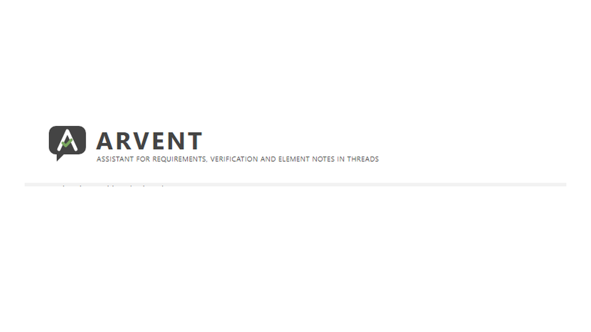
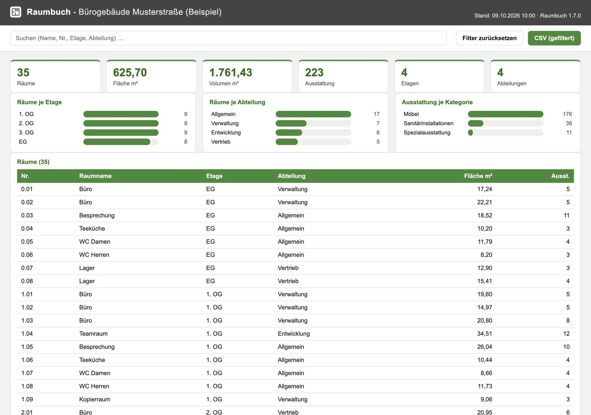
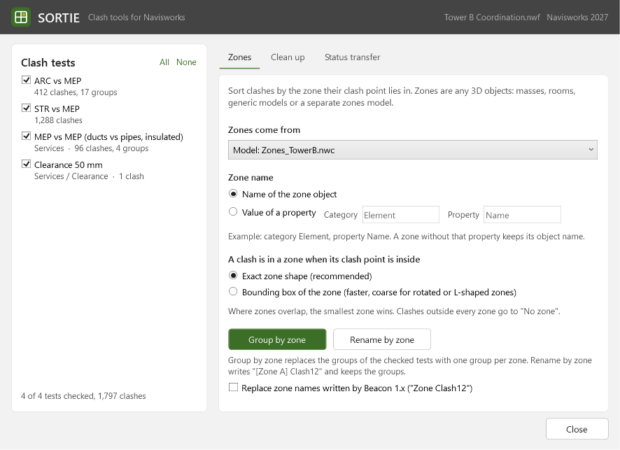
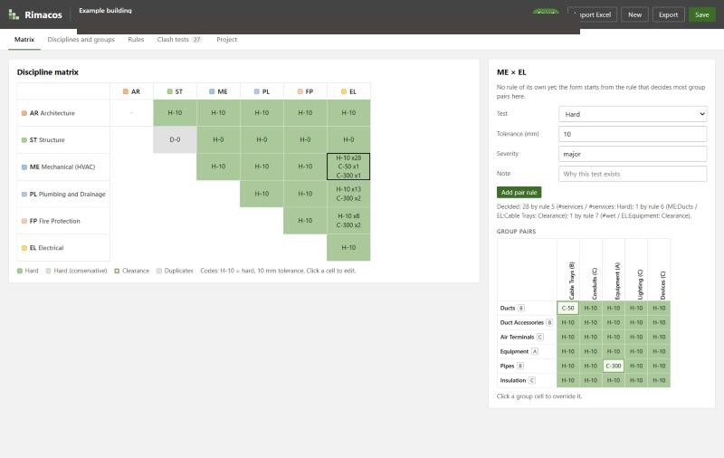
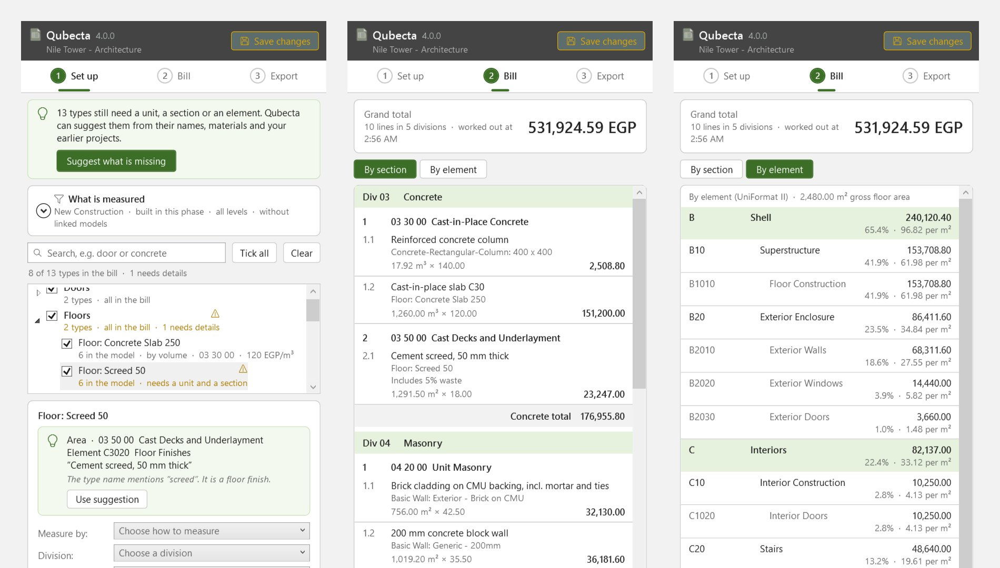
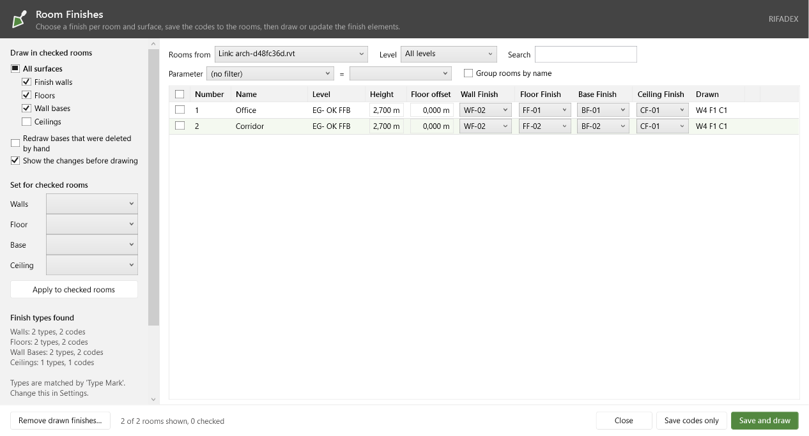
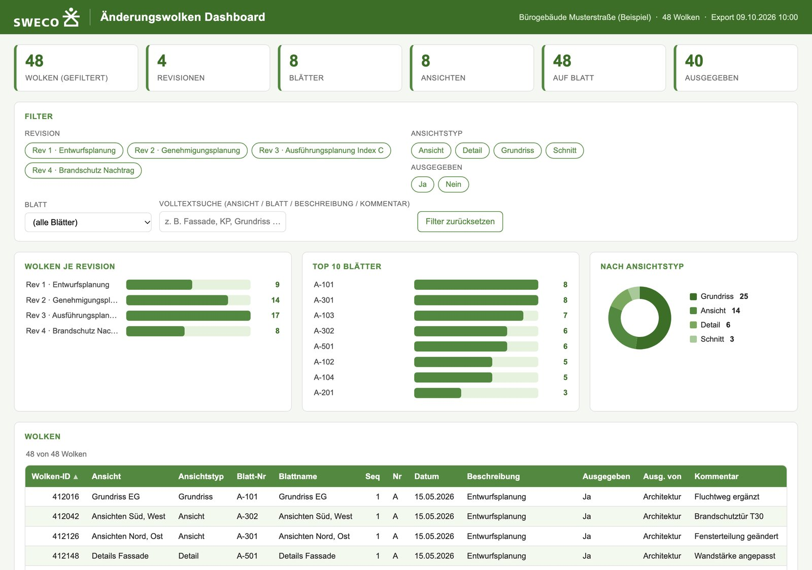
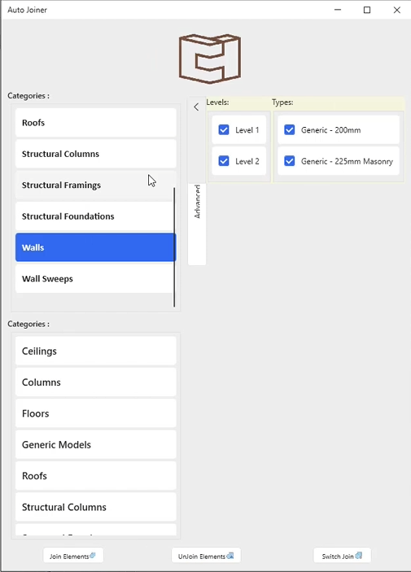
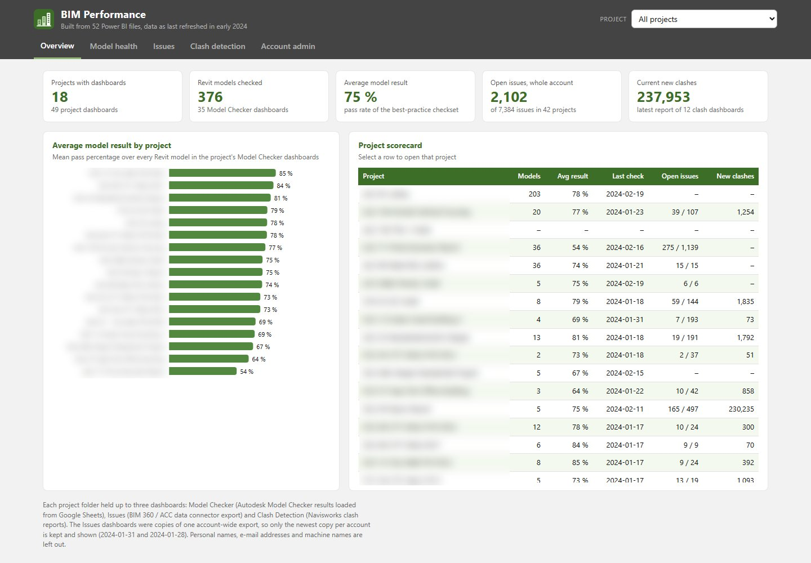
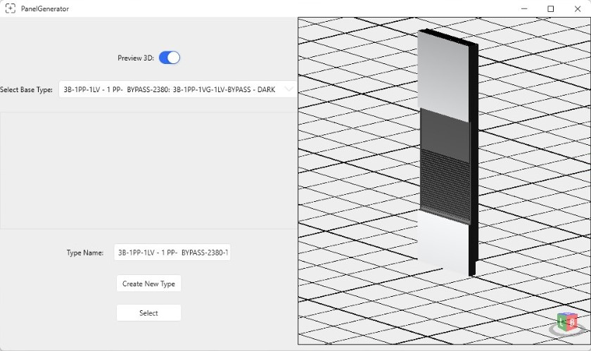

Now: BIM & AI Solutions Architect at Sweco, Munich
Mohamed K. Mahdy
BIM & AI Solutions Architect · Munich
I build software that makes BIM data usable, and lately, software that lets AI act on it.
For five years I've written the tools that sit between engineers and their models: add-ins, background services and cloud integrations that take repetitive coordination work off people's desks.
What I do
Three things I'm good at
Most of my work falls into one of these. Each lists the tools I use and the projects that show it.
Revit & Navisworks tools
Add-ins and batch tools that take repetitive model work off people's desks: checks, exports, quantities and clashes.
- Revit API (2022 to 2027)
- Navisworks API
- Autodesk Model Checker
- Dynamo
- Grasshopper
- RhinoCommon
- pyRevit
- Desite MD
Projects: Bimnox · Raumbuch · SORTIE · Rimacos · Qubecta · RIFADEX · Family Validation · Cloud Revisions · Revit Automation Suite · Curtain Panel Suite
Cloud & data integration
Getting model data out of one platform and into another, and into dashboards people who never open the model will actually read.
- Autodesk Platform Services (Viewer, Model Derivative, Data Management, AEC Data Model)
- ACC
- BIM 360
- Speckle
- IFC / IfcOpenShell / web-ifc
- IDS
- BCF
- Power BI
- Power Automate
- Power Apps
- SharePoint
- pandas
- machine learning
Projects: Bimnox · Raumbuch · ARVENT · LARBACC · Cloud Revisions · BIM Analytics
AI on BIM data
Language models that answer questions about a building model, with the numbers computed by code rather than guessed.
- Model Context Protocol
- Claude API
- local LLMs (Ollama, Llama)
- constrained query planning
- multi-agent orchestration
- Azure OpenAI
- LLM evaluation
Projects: ARVENT
- Software
- C# .NET (Framework 4.8, .NET 8, .NET 10; WPF / MVVM) · Python · React · Vite · FastAPI · Node.js · GraphQL · SQL · SQLite · xUnit · pytest · Pydantic
- Geospatial
- Spatial data mining · distributed GIS & cloud computing · geospatial data harmonisation · photogrammetry & remote sensing · mobile laser scanning · earth-observation data science
Selected work
Things I've built
Each case study starts with a plain explanation, then the problem, then what the tool actually does. Technical words are explained at the bottom.

Bimnox
Runs model checks and exports on dozens of Revit models at once, on a schedule, with nobody sitting at the computer.

ARVENT
Answers questions about a 3D building model in plain language, right in the model's comment threads. It runs on a local AI model, so the data stays on the machine.

Raumbuch
Builds a room book, every room and everything in it, straight from the building model. A Revit add-in, plus a web app that also opens IFC files.
More projects
Most of the code is private. I'm happy to walk you through any of it.
SORTIE
Sorts thousands of Navisworks clashes by building zone, and keeps their status and comments when the clash test runs again.
Read the case study →
Rimacos
Replaces a huge hand-filled clash matrix with a few rules, then writes the clash tests for Navisworks and for open-source tools.
Read the case study →
Qubecta
Turns the quantities in a Revit model into a priced bill of quantities and a cost plan, exported to Excel, PDF or the German GAEB tender format.
Read the case study →
RIFADEX
Draws the wall, floor, skirting and ceiling finishes of every room in Revit, and keeps them right when the design changes.
Read the case study →
LARBACC
Copies your Autodesk Construction Cloud projects to your own drive every week, downloading only what changed.
Read the case study →Family Validation
Checks and cleans whole folders of Revit families against a company standard, without anyone opening Revit.
Read the case study →
Cloud Revisions
Lists every revision cloud in a Revit model with its sheet and revision details, and exports the list to Excel or an offline dashboard.
Read the case study →
Revit Automation Suite
Four Revit tools that take over repetitive model tasks: preparing files for issue, organising worksets, joining elements and copying types between projects.
Read the case study →
BIM Analytics
Power BI dashboards that show model health, open clashes, issues and team workload to the people who never open the models.
Read the case study →
Curtain Panel Suite
Four Revit tools that take a glass facade from design to finished drawings: create the panels, list them, draw each type and label everything.
Read the case study →Experience
Where I've worked
Six organisations and a freelance practice, from Cairo to Dubai to Munich.
- 2026 to now
Sweco · Munich
BIM & AI Solutions Architect
I work on the department's AI roadmap: scoping the automation portfolio, planning the Microsoft Copilot Studio rollout and setting delivery milestones with leadership. I also build the Revit tools and LLM agents myself and take them through internal release.
- 2025 to 2026
Sweco · Munich
BIM & AI Specialist (working student)
Revit add-ins, LLM agents that search technical documentation, Power Automate and Power Apps for project workflows, and Power BI dashboards that show coordination status.
- 2024 to 2025
Obermeyer · Munich
BIM Software Developer (working student)
Scripts that automate model-checking rules in Desite MD, Power Automate flows that sort and name SharePoint files, and Power BI dashboards on model quality.
- 2023 to 2024
Dewan Architects + Engineers · Dubai, remote
BIM Software Developer & Data Analyst
BIM software and data analysis for coordination, model quality and project reporting.
Earlier roles, 2020 to 2024
- 2022 to 2024
Freelance (Upwork) · Remote
BIM Software Developer & Data Analyst
18 client projects, 895 billable hours and a 5.0 average rating: Revit automation, Dynamo scripts and Python data pipelines.
- 2023
Solid Construction · Cairo
BIM Software Developer
Revit add-ins and Dynamo scripts for structural modelling, quantities and finishes.
- 2021 to 2023
Pinnacle Misr · Cairo
BIM Coordinator / Developer
Revit plugins and Dynamo workflows on large projects, including the El Alamein Iconic Tower and Kitoko Ministerial City.
- 2020 to 2021
X-Dimension · Cairo
BIM Architect
BIM standards and templates, Dynamo scripts, and Scan-to-BIM (turning laser scans of existing buildings into models).
About
A bit about me
I trained as an architectural engineer, and the drawings were never the part that hooked me. It was the logic behind them. The interesting problems in construction turned out to be data problems: project information stuck in disconnected tools and manual routines. I build the systems that connect it.
That has meant Revit and Navisworks plugins, model-health and clash dashboards, and automation that runs on its own, in Cairo, Dubai and now Munich. Along the way I did 18 freelance client projects, 895 billable hours with a 5.0 average rating, and doubled my rate.
In 2024 I left a good full-time job to do the ITBE master's at TUM, and I don't regret it for a second. It added the half I was missing: GIS, spatial data mining, photogrammetry and remote sensing, next to semantic modelling and software engineering. BIM, GIS and AI are converging, and not many people work across all three.
How I build
- People stay in controlEvery action is one undo step. There's a dry run before anything changes. When AI suggests something, a person signs off.
- Boring is a featureThe best tools run overnight, try again when the network drops, and never leave a half-finished result that looks finished.
- Data stays where it belongsAI models that run locally, IFC files read in the browser instead of uploaded, and no passwords or keys baked into a program.
- Open where it countsIFC, IDS and BCF wherever they fit, so nobody gets locked into one vendor.